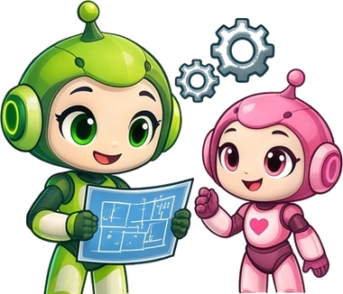

1
Get your messages ready
10 minutes · at the top of the page- Go back up to the message workshop and type your name: the welcome message fills itself in.
- Add your other messages, one per line: a joke, “Knock before you come in”, your bedroom weather…
- Click Someone's coming! to watch your panel wake up and scroll everything.

Tip
Ellie remembers your messages in this browser. You can come back and change them any time: the program in step 5 updates itself.
